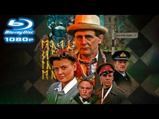
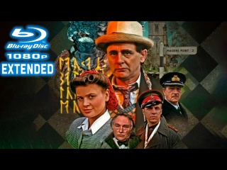
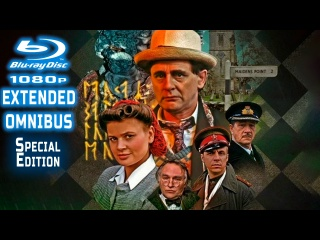
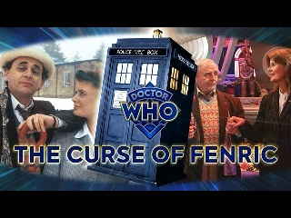
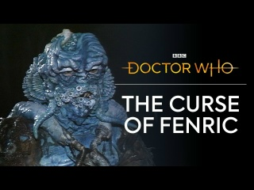
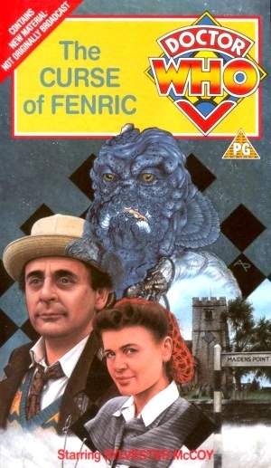
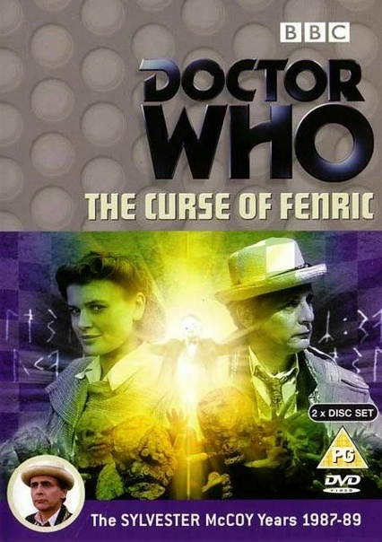
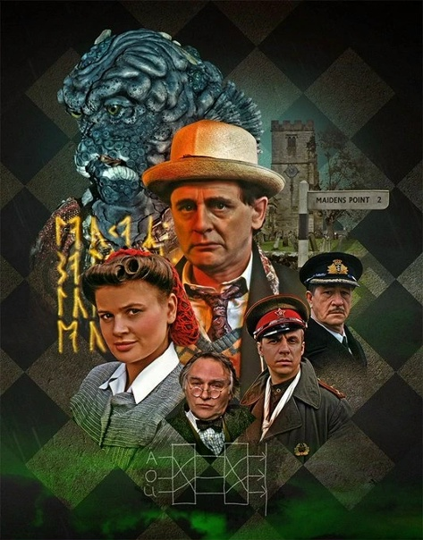
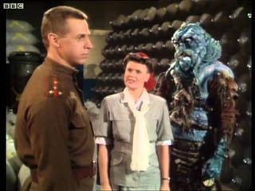

Субтитры: Русские {Антон Линевский} и Английские |  |
|---|---|
Субтитры: только Английские |  |
Субтитры: Русские {Jaskier} и Английские |  |
Субтитры: Русские {Jaskier} и Английские |  |
Субтитры: отсутствуют |  |
The Curse of Fenric
Дата выхода: 25 октября - 15 ноября 1989
Формат: 4 эпизода по 25 мин.
|
Доктор и Эйс прибывают в 1943 год на секретную военно-морскую базу в Англии, где расшифровывают немецкие коды. Древнее зло пробуждается у побережья — в пещерах скрывается Фенрик, существо, которое Доктор уже однажды победил и заточил в прошлое. Фенрик играет с Доктором в шахматы, расставляя людей как фигуры на доске, и Эйс оказывается одной из них. Раскрытие правды о прошлом Эйс и её матери ставит отношения Доктора и Эйс на грань разрыва.
Сценарий Эндрю Картмела, завершающий его трилогию историй о Великом Тёмном. Серия наполнена отсылками к скандинавской мифологии — Фенрик отсылает к Фенриру, волку из норвежских легенд. Сцена, где Доктор жестоко разбивает веру Эйс, чтобы спасти её от Фенрика, стала одной из самых знаменитых и противоречивых в истории сериала. Таня Воккс в роли Орсвин — первого вампира в «Докторе Кто».
 VHS - февраль 1991 |  DVD - 6 октября 2003 |
|---|---|
 Blu-ray - 27 января 2020 * Версия в нашей группе |  Blu-ray (сборник историй) - 9 ноября 2020 |
 В 2023 году вышел сериал, где спутники доктора вспоминают свои приключения в консольной комнате "ТАРДИС воспоминаний". По сути идет полный повтор старых серий со вставками постаревших актеров в начале и в конце. В 2023 году вышел сериал, где спутники доктора вспоминают свои приключения в консольной комнате "ТАРДИС воспоминаний". По сути идет полный повтор старых серий со вставками постаревших актеров в начале и в конце.В "Историях ТАРДИС" эта серия является ШЕСТОЙ! |

